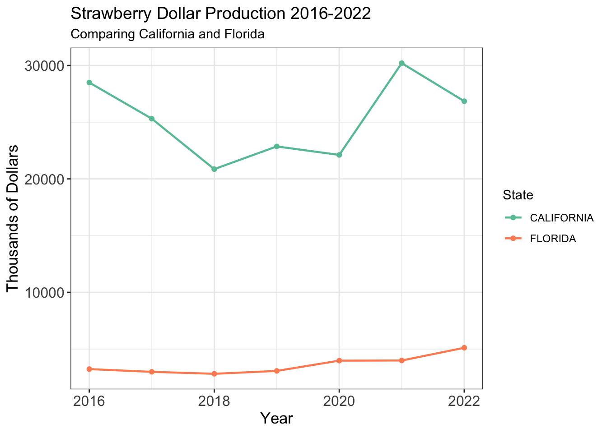
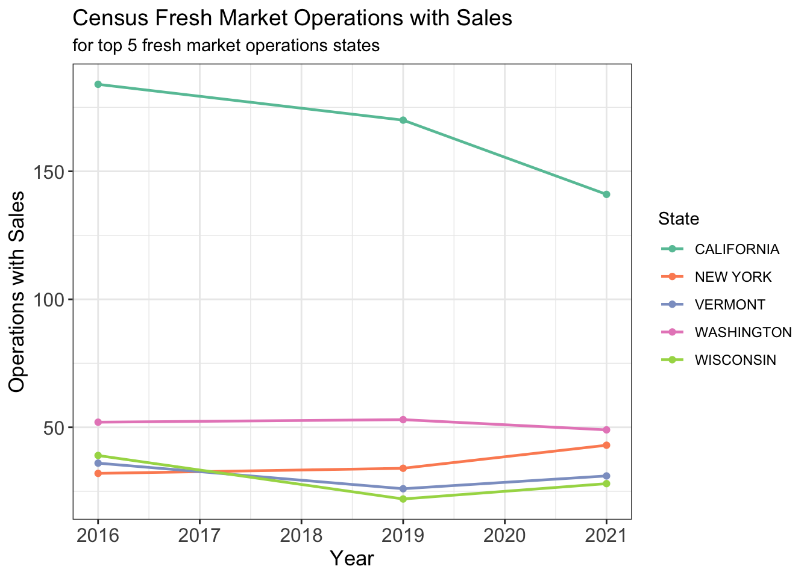
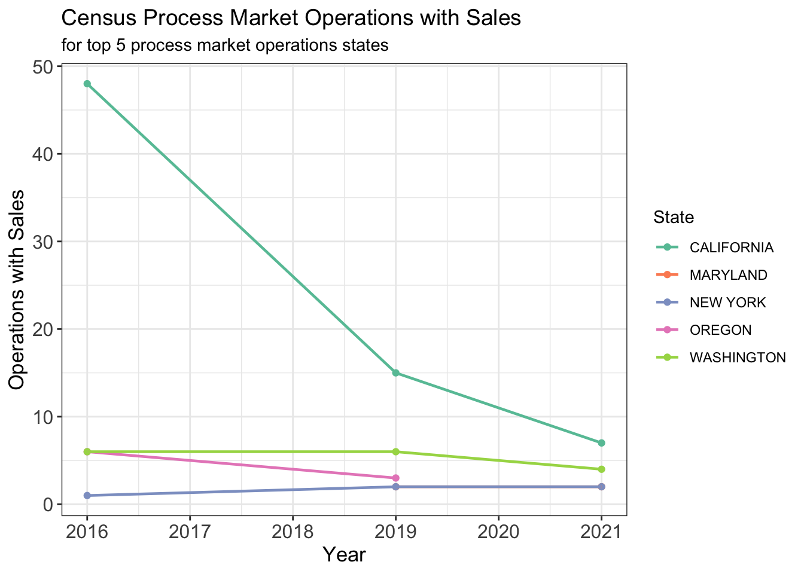
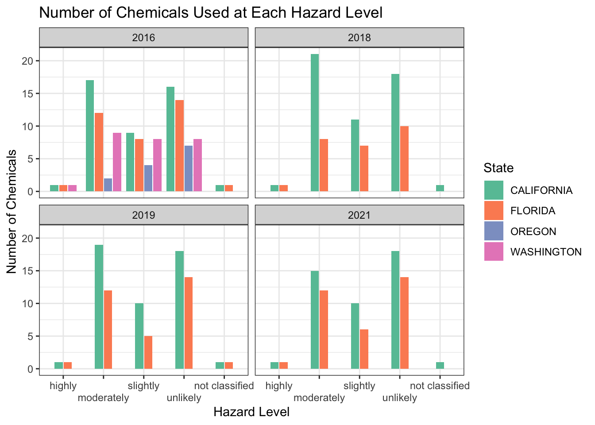

| Program | Year | Period | Week Ending | Geo Level | State | State ANSI | Ag District | Ag District Code | County | County ANSI | Zip Code | Region | watershed_code | Watershed | Commodity | Data Item | Domain | Domain Category | Value | CV (%) |
|---|---|---|---|---|---|---|---|---|---|---|---|---|---|---|---|---|---|---|---|---|
| CENSUS | 2021 | YEAR | NA | STATE | ALASKA | 02 | NA | NA | NA | NA | NA | NA | 00000000 | NA | STRAWBERRIES | STRAWBERRIES, ORGANIC - OPERATIONS WITH SALES | ORGANIC STATUS | ORGANIC STATUS: (NOP USDA CERTIFIED) | 2 | (H) |
| CENSUS | 2021 | YEAR | NA | STATE | ALASKA | 02 | NA | NA | NA | NA | NA | NA | 00000000 | NA | STRAWBERRIES | STRAWBERRIES, ORGANIC - PRODUCTION, MEASURED IN CWT | ORGANIC STATUS | ORGANIC STATUS: (NOP USDA CERTIFIED) | (D) | (D) |
| CENSUS | 2021 | YEAR | NA | STATE | ALASKA | 02 | NA | NA | NA | NA | NA | NA | 00000000 | NA | STRAWBERRIES | STRAWBERRIES, ORGANIC - SALES, MEASURED IN $ | ORGANIC STATUS | ORGANIC STATUS: (NOP USDA CERTIFIED) | (D) | (D) |
Strawberries: Exploratory Data Analysis Report

Motivations and Initial Questions
Are strawberries truly safe to consume? In 2020, the per capita consumption of the most popular berry in the United States, strawberries, was 8.5 pounds. There are many health benefits of consuming strawberries including a healthy immune system from Vitamin C as well as cell and tissue protection from antioxidant compounds. However, strawberries are also known for being a produce with one of the concentration of pesticides. According to the World Health Organization, some pesticides are potentially toxic to humans and may have a negative impact on one’s immune or nervous system or may even cause cancer. These facts motivate the question regarding what pesticides are found on strawberries. Of these pesticides, which are the most toxic to humans and which are safe to consume in small quantities? Furthermore, are the use of different pesticides consistent in different states or do they vary by region? These questions all address the concern of whether or not strawberries are really safe to eat.
The Data
To investigate and potentially answer some of these questions, we looked at data from the United States Department of Agriculture National Agricultural Statistics Service. The original downloaded data from this source includes census and survey data on the sales, production and price received of strawberry products between the years 2016 and 2022. A glimpse of the original data can be viewed below.
Variables
Program: census or survey dataYear: Year census or survey data was observed between 2016 and 2022Period: Calendar year or marketing year. For Prices Received data, refers to an unweighted average (by month) for the calendar yearState: State in which data was collectedState ANSI: Code issued by the American National Standards Institute to ensure uniform identification of geographic entities through all federal government agenciesData Item: Strawberry item being measured and units of measurementDomain: Organic, Chemical, or Fertilizer utilization status of strawberry itemDomain Category: Organic, Chemical, or Fertilizer status of strawberry item with chemical names and PC codesValue: Measurement of data itemCV %: Coefficient of variation
All other variables (Week Ending, Geo Level, Ag District, Ag District Code, County, County ANSI, Zip Code, Region, watershed_code, Watershed, Commodity) from the original data set are columns with a single value and will be removed from the data set.
Following the removal of the single value columns, the data set now has 4,314 rows and 10 columns.
Data Exploration, Organization, and Cleaning
Data Types
By observing the preview output of the data set below, we are able to see the data types of all ten variables. We can also see that variables Value and CV % have combinations of numerical data as well as single uppercase character data which represents footnote abbreviations. The interpretation of these abbreviations as well as other term definitions used by the USDA NASS can be found here. Ideally, we want these two variables to be numeric which requires us to change the nonnumerical values to NA and remove commas from numbers.
Rows: 4,314
Columns: 10
$ Program <chr> "CENSUS", "CENSUS", "CENSUS", "CENSUS", "CENSUS", "C…
$ Year <dbl> 2021, 2021, 2021, 2021, 2021, 2021, 2021, 2021, 2021…
$ Period <chr> "YEAR", "YEAR", "YEAR", "YEAR", "YEAR", "YEAR", "YEA…
$ State <chr> "ALASKA", "ALASKA", "ALASKA", "ALASKA", "ALASKA", "A…
$ `State ANSI` <chr> "02", "02", "02", "02", "02", "02", "02", "06", "06"…
$ `Data Item` <chr> "STRAWBERRIES, ORGANIC - OPERATIONS WITH SALES", "ST…
$ Domain <chr> "ORGANIC STATUS", "ORGANIC STATUS", "ORGANIC STATUS"…
$ `Domain Category` <chr> "ORGANIC STATUS: (NOP USDA CERTIFIED)", "ORGANIC STA…
$ Value <chr> "2", "(D)", "(D)", "(D)", "2", "(D)", "(D)", "142", …
$ `CV (%)` <chr> "(H)", "(D)", "(D)", "(D)", "(H)", "(D)", "(D)", "19…We are able to see the unique footnotes in each of the Value and CV % columns by using the function below.
unique_foot <- function(c){
suppressWarnings({
xnew = as.numeric(gsub(",", "", c))
fns = unique(c[is.na(xnew)])
return(fns)
})
}Unique footnotes in Values: (D) (NA) (Z) Unique footnotes in CV %: (H) (D) NAAgain, the definitions of these unique abbreviations can be found on the USDA NASS website. The abbreviations provide the reasoning behind why the data is missing but for the purposes of this analysis, they may all be replaced by NA.
By building a function, called dcomma, we are able to pass in the columns of Value and CV % and it will return our desired numerical columns with NAs in the footnote cells. As seen below, our last two variables are now doubles as desired.
dcomma <- function(c){
suppressWarnings({
xnew = as.numeric(gsub(",", "", c))
return(xnew)
})
}Rows: 4,314
Columns: 10
$ Program <chr> "CENSUS", "CENSUS", "CENSUS", "CENSUS", "CENSUS", "C…
$ Year <dbl> 2021, 2021, 2021, 2021, 2021, 2021, 2021, 2021, 2021…
$ Period <chr> "YEAR", "YEAR", "YEAR", "YEAR", "YEAR", "YEAR", "YEA…
$ State <chr> "ALASKA", "ALASKA", "ALASKA", "ALASKA", "ALASKA", "A…
$ `State ANSI` <chr> "02", "02", "02", "02", "02", "02", "02", "06", "06"…
$ `Data Item` <chr> "STRAWBERRIES, ORGANIC - OPERATIONS WITH SALES", "ST…
$ Domain <chr> "ORGANIC STATUS", "ORGANIC STATUS", "ORGANIC STATUS"…
$ `Domain Category` <chr> "ORGANIC STATUS: (NOP USDA CERTIFIED)", "ORGANIC STA…
$ Value <dbl> 2, NA, NA, NA, 2, NA, NA, 142, 1413251, 311784980, 1…
$ `CV (%)` <dbl> NA, NA, NA, NA, NA, NA, NA, 19.2, 51.6, 46.0, 51.7, …NAs
Our next step involves investigating observations that contain NA values. The only three columns that contain NA values are State ANSI as well as Value and CV % from our dcomma function. Those rows that have an NA in the State ANSI column have the value “OTHER STATES” in the State column. Some quick code allows us to find those states that are included in this STATE column and which states fall in the “OTHER STATES” category.
all_states <- toupper(state.name)
toupper(state.name)[!(toupper(state.name) %in% unique(strawberry$State))][1] "DELAWARE" "HAWAII" "MISSISSIPPI" "WYOMING" Data from all states have been collected except for the four states of Delaware, Hawaii, Mississippi, and Wyoming which will be grouped in the “OTHER STATES” value. As a result of these four states being combined into one value, there is no State ANSI code for this value and the resulting output is NA In this case, no further steps will be taken to deal with these NAs as they are acceptable in the State ANSI column and do not propose any challenges in our future analysis.
The NAs in the Value and CV % columns were produced from our transformation of the columns into numeric form. Here as well, no further steps will be taken to deal with these NAs as they are acceptable in the Value and CV % columns and do not propose any challenges in our future analysis. Additionally, there are no duplicated rows.
Splitting Census and Survey
Before beginning the exploratory analysis of the data, we will first split the data set into two subsets: one data set that is census data and one data set that is survey data. This will allow us to closely investigate the marketing, sales, and production data of the strawberries in the census data set and chemical data of the strawberries from the survey data set.
Census
In the census data set, there are two columns that each contain several elements. Domain Category is a column with the singular value “ORGANIC STATUS: (NOP USDA CERTIFIED)” which states that the strawberry product is certified by the National Organic Program. Splitting Data Item into more columns will allow us to look at each element individually and observe what information the element tells us about the strawberry product.
In this new data set, we have now added a Fruit column which contains the singular value Strawberries, and crop_type which contains the singular value Organic. Additionally, the rest of the Data Item column was split into four new columns: Totals, Fresh Market, Process Market, and Metric. Data under Totals includes the total production and sales of the strawberry product from a specific state and year. Data under Fresh Market includes the sales from the fresh market which includes retail stores, farmers’ markets, or pick-your-own operations. Data under Process Market includes sales from the processed market where strawberries are often frozen before being processed in a final product. The Metric column provides whether or not the production of the strawberries or sale of the strawberries was measured in CWT (hundredweight) or dollars.
Survey
The survey data will be further split into a data set similar to the census data that provides information on census marketing, sales, and production data as well as another data set that provides information on the chemicals used by strawberry growers.
The survey market data set now has new columns Totals, Processing, Utilized, Processing, Fresh Market, Utilized, Fresh Market, Utilized, Bearing, and Not Sold. Each column provides the property of the strawberry product to be measured while the new Metric column provides the units of measurement for the property.
New names:
Rows: 1543 Columns: 3
── Column specification
──────────────────────────────────────────────────────── Delimiter: "," chr
(2): CASCode, cat lgl (1): ...3
ℹ Use `spec()` to retrieve the full column specification for this data. ℹ
Specify the column types or set `show_col_types = FALSE` to quiet this message.
• `` -> `...3`The survey chemical data expands the Domain Category column into the Substance, Chemical Name, and PC Code of the chemical used on the strawberry product. The PC codes of each chemical were matched with their corresponding CAS number in order to determine the hazard level of each chemical. Hazard levels range from extremely hazardous to unlikely to present acute hazard.
Exploratory Data Analysis
California Strawberry Production
When observing the rows of the larger strawberry data set, it can be seen that each row is associated with a state, suggesting that the data is organized by whether the data is census or survey as well as by state. Further exploration shows that the state with the most rows and therefore the state with the most data on strawberries is California. This result makes sense as California is known for being the lead strawberry producing state with its ideal climate.

Since strawberries are produced more in California than any other state, we first look at the value of all strawberries produced in California and compare to the value of all strawberries produced in Florida, which is the state that produces the second most strawberries. Figure 1 shows California’s produced strawberries valued at over $2 billion each year from 2016 to 2022. The next largest strawberry producing state produced over $1 billion less worth of strawberries each year.
Fresh Market vs Process Market
From the above results, we see that California is the state that produces strawberries more than any other state. But what kinds of markets are these strawberries being sold to? The census data was observed to determine the rank of states with the most Operations with Sales to fresh markets. The top fives states were, California, Washington, New York, Vermont, and Wisconsin. Similarly, the top five states with the most Operations with Sales to process markets were California, Washington, Oregon, New York, and Maryland. The five states in each group will be analyzed in the graphs below.

Figure 2 shows each state’s number of operations with sales in each of the 2016, 2019, and 2021 census years. The lead strawberry producing state is also the state selling the most strawberries to fresh markets. Although Florida was the second state with the largest dollar production of strawberries, they did not make either top five list of number of operations with sales to the fresh market or process market. It is interesting to note that in the 2016 census year, Wisconsin had more operations with sales to the fresh market than Vermont and New York. But between 2016 and the next census year of 2019, Wisconsin dropped the number of operations with sales to below that of Vermont and New York, while New York surpassed Vermont and Washington.

When observing the top five states with the most operations with sales to the proces market, Figure 3 demonstrates that the rankings stay relatively the same over the three census years. There was no data available for Oregon in 2021.
Chemicals By State
To answer our initial question of whether or not strawberries are truly safe to eat, we will look at the survey chemical data set. Which states are using which kinds of chemicals and what are the hazard levels of these chemicals?

A data frame was created from the survey chemical data that contains the number of unique chemicals used in each hazard level by each state per year. For example, in the year 2016, California used 14 different chemicals that had a hazardous level of moderately hazardous. Data for this analysis was only available for California, Florida, Oregon, and Washington in the year of 2016 and only available for California and Florida in 2018, 2019, nd 2021. Figure 4 shows that in 2016, California, Florida, and Washington all used one highly hazardous chemical. The available data also shows that California and Florida used a highly hazardous chemical in 2018, 2019, and 2021. This chemical was the same highly hazardous chemical used in all years: Abamectin. Human intoxication of Abamectin is often not reported but in large doses it can potentially be a fatal cause of pesticide poisoning. An experiment was conducted in which a subject was intoxicated with 3600 milligrams of Abamectin orally. Symptoms included an oral scent of poison, drowsiness, low blood pressure, increased heart rate, and rash. The subject was treated and was discharged two days later in good condition.
Figure 4 also shows that California always utilizes the most chemicals in each hazard group. In 2016, 2018, 2019, and 2021, California would use at least 13 different kinds of moderately hazardous chemicals and at least 8 different kinds of slightly hazardous chemicals.
Future Work
The original data set contains a lot of missing information. Most data was attributed to lead producing states of Strawberries like California and Florida. Data from other states were often withheld from general public knowledge. Obtaining this missing information would allow us to conduct a more inclusive analysis comparing all states.
Additionally, further steps could be taken to clean the data. There is one column, Value, that contains all different kinds of measurements with different units. This makes EDA more complicated. This column could be pivoted wider to create multiple columns that contain in each column a specific method of measurement that is in one unit of measurement. With data organized into columns of one unit of measurement as well as access to all states’ information, we could look closer at the money received by each state from selling strawberries to fresh markets compared to process markets.
Getting access to more of the missing data would also allow us to observe what other states are using different levels of hazardous chemicals. California is the state that produces the most strawberries and uses the most chemicals on their strawberries. But are there states who produce a lot of strawberries and use very few hazardous chemicals? Or are there states who do not produce a lot of strawberries and use highly hazardous chemicals?